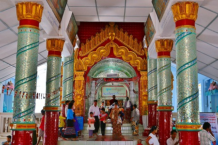
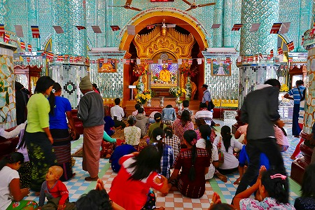
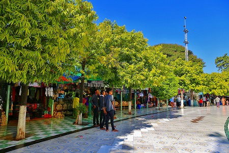
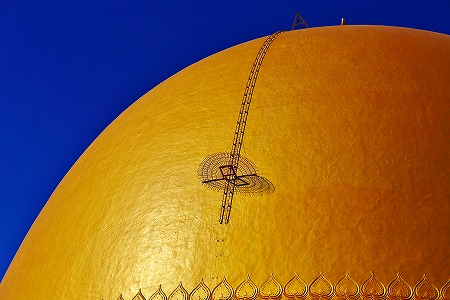
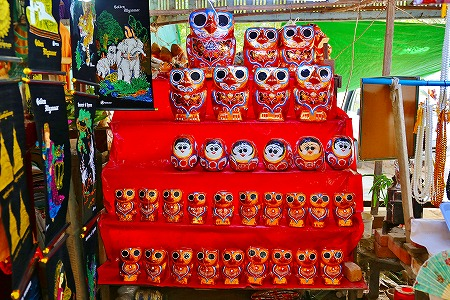

で、
ミャンマーである。
14年ぶりのミャンマーは民主化政権に移行しつつある中で色々と
国情や市民生活も変化していた。
まずは入国の際の強制両替がない。外国人専用紙幣がない。
何より車が増え、町が心なしか小奇麗になったよう。
以前のレポートは
こちら
空路も充実しており、バンコクからミャンマーの古都、マンダレーまでエアアジアの直行便があるのだ。
というわけで中心都市であるヤンゴンをスルーし、バンコクから一気にマンダレー空港まで直行した。
何故ならヤンゴンは物価も急上昇し、今世界で最もホテルがとりにくい（競争率も高いし、価格も高い）町になってしまったからである。
さらにマンダレー市内すら寄らずに空港から直接西へ西へと移動するのであった。
目指すはモンユアという町だが、途中休憩がてら
カウンムードーパゴダに寄ってみた。
ここはマンダレーの西にあるザガインという町の近郊にある寺だ。
久しぶりのミャンマーなので、リハビリのつもりで参拝することにした。
以前ミャンマーを訪れた際も、確か寄ったはずだが、どうも様子が違う。
そうか！真っ白だったパゴダが金色に塗りなおされているではないか！
かつてはその形状からおっぱいパゴダと呼ばれていたようだが、さすがに金色だとおっぱい感も出ませんねぇ。
一説には軍事政権がおっぱいけしからん！と金色に塗り替えたとか。
いけませんなあ、政治がお寺の色までコントロールしては。野暮です無粋です。

大勢の参拝客でごった返すパゴダの中に入ってみる。

中はガラスのモザイクが施されており、大勢の人が参拝したり休憩したり。
お寺は信仰の場であると同時に、市民のくつろぎの場であり、娯楽施設であり、デートスポットである。
素晴らしい事ですね。
ミャンマーの人達は相変わらず男も女も布を腰に巻くロンジーという民族衣装を着ている。
そして女性はタナカという白い白粉のようなモノを顔に塗っている。

金ぴかなパゴダ(仏塔）を取り囲むように土産物屋がズラリと並んでいる。
垢抜けない土産物が多いが、他の国では見られないモノも結構多いので見て歩く分には楽しい。
ただし買うモノはそんなにないかなー。

パゴダのてっぺんから屋根に沿って階段が下がっていた。
恐らくぐるりと回って屋根の部分を修理したり金箔を貼りなおしたりするのだろう。カッコイイ。
土産物参道にも土産屋がたくさん並んでいる。

何故かフクロウの張子が人気だった。
という訳で、参拝をすませ、いよいよ本格的にミャンマーの旅が始まりますよー。
次のパトロールにGO！